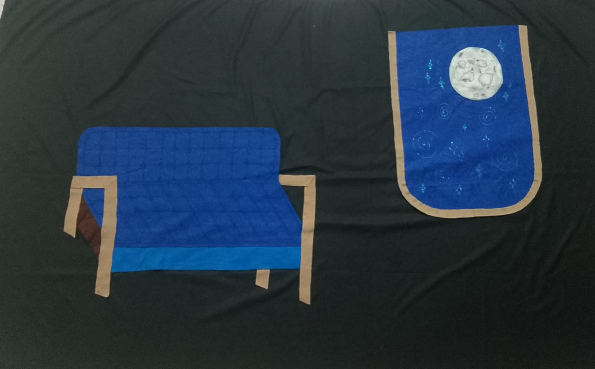
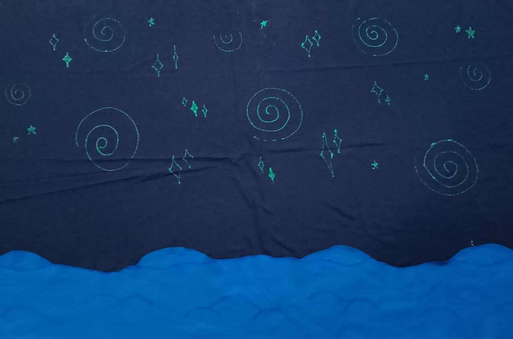

Estilo visual y ambientación
La escenografía combina elementos caricaturescos y teatrales: colores brillantes, formas redondeadas, utilería exagerada y fondos verdes para proyecciones digitales. Se busca un entorno dinámico e inmersivo que refuerce la fantasía de los cuentos, con una tematica artisica principal estilo fauvista.
La utilería tiene un estilo teatral, artesanal y fantástico. Usa telas, cristales y estructuras que simulan rocas y cavernas. Predomina el contraste entre fondo oscuro y elementos brillantes. Transmite una atmósfera de aventura espacial o cuento, diseñada para transportar al espectador a un mundo imaginario con sencillez creativa.
La escena presenta un estilo artesanal, simbólico y minimalista. Utiliza tela en tonos azules y marrones para crear elementos como una cama y una luna, con fondo negro que resalta los colores. La utilería transmite calma y ensoñación, evocando un espacio íntimo, casi poético, con una estética de teatro íntimo.
La imagen utiliza un estilo visual fantástico y onírico con fondo azul oscuro y espirales verdes que evocan el universo. La utilería incluye números grandes, formas onduladas y elementos simbólicos como estrellas, creando una atmósfera mágica y abstracta. El conjunto sugiere una narración visual ligada al tiempo, el cosmos y la imaginación.
El estilo visual es fantástico y marino, con fondo azul oscuro y formas onduladas que evocan olas. La utilería incluye estructuras estilizadas como peces, redes y elementos submarinos que crean una atmósfera mágica. La composición sugiere un entorno acuático de ensueño, diseñado con estética lúdica y simbólica para teatro visual.
